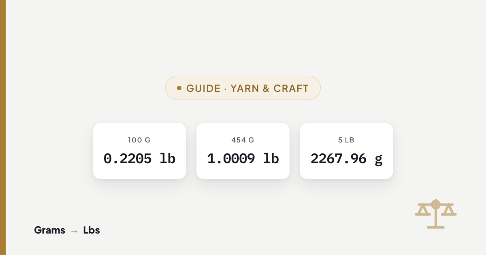

Yarn Weight in Pounds: Converting Skein Grams for Bulk Buying
Skein and ball labels are almost always printed in grams, while bulk and wholesale craft yarn is priced and shipped by the pound. This converts a figure from either system into the other.

Yarn and craft fiber labels are printed in grams almost everywhere, but US wholesale and bulk craft supply is commonly priced, listed and shipped by the pound. Divide a gram figure by 453.59237 to get decimal pounds, or multiply a pound figure by 453.59237 to get grams — the charts below apply that formula to skein sizes, bulk packs, and the project totals a knitting or crochet pattern gives you.
The quick answer
To convert a yarn or craft material weight from grams to pounds, divide the number of grams by 453.59237; to go the other way, multiply the number of pounds by 453.59237. These three sizes cover a lot of what shows up on skein labels and wholesale listings:
Common skein and ball sizes converted to pounds
Most consumer skeins and balls are labeled in grams — 25 g, 50 g and 100 g are the sizes seen most often, with some brands going up to 150 g or 200 g. A handful of worsted-weight skeins are labeled in ounces instead and sold at 16 oz, which is close to but not exactly one true pound.
| Skein weight (g) | Decimal pounds | Pounds & ounces |
|---|---|---|
| 25 g | 0.0551 lb | 0 lb 0.88 oz |
| 50 g | 0.1102 lb | 0 lb 1.76 oz |
| 100 g | 0.2205 lb | 0 lb 3.53 oz |
| 150 g | 0.3307 lb | 0 lb 5.29 oz |
| 200 g | 0.4409 lb | 0 lb 7.05 oz |
| 250 g | 0.5512 lb | 0 lb 8.82 oz |
| 400 g | 0.8818 lb | 0 lb 14.11 oz |
| 453.59 g (a true pound) | 1.0000 lb | 1 lb 0.00 oz |
| 454 g (16 oz, labeled) | 1.0009 lb | 1 lb 0.01 oz |
| 500 g | 1.1023 lb | 1 lb 1.64 oz |
A skein marked "16 oz" or "1 lb" on the label is normally rounded to 454 grams by the manufacturer, which is 1.0009 pounds — close enough to one true pound (453.59 g) that the difference, about 0.4 grams, never matters for buying or shipping.
Bulk cones and wholesale packs converted to grams and kilograms
Wholesale and bulk craft yarn is usually listed by the pound in the US, sold as cones or multi-pound packs rather than individual skeins. Converting that pound figure to grams or kilograms matters when comparing a US pound-priced listing to a metric-labeled cone, or when a shipping weight limit is given in kilograms.
| Pack size (lb) | Grams (g) | Kilograms (kg) |
|---|---|---|
| 1 lb | 453.59 g | 0.4536 kg |
| 4 lb | 1,814.37 g | 1.8144 kg |
| 5 lb | 2,267.96 g | 2.2680 kg |
| 10 lb | 4,535.92 g | 4.5359 kg |
A cone sometimes gets marketed with a rounded metric figure that does not line up exactly with its pound figure — a "4.5 kg / 10 lb" bulk pack, for example, is actually 9.9208 pounds (4,500 grams divided by 453.59237), not an even 10. Wholesalers also commonly note that a cone's exact weight varies slightly from the listed figure and that the invoice reflects the real weighed amount, not the rounded label — worth checking if a bulk order's packing slip looks a little off from what was ordered.
How many skeins make a pound of yarn?
It depends on the skein size, but a true pound (453.59237 g) works out to about 9.07 skeins of 50 gram yarn or about 4.54 skeins of 100 gram yarn. Some shopping guides round this down to "about eight 50-gram skeins per pound" for a quick mental estimate, which is close but slightly low — eight 50 gram skeins is only 400 grams (0.8818 lb), not a full pound. For an exact count for any skein size, divide 453.59237 by the skein's gram weight.
| Skein size | Skeins per pound (exact) |
|---|---|
| 25 g | 18.14 |
| 50 g | 9.07 |
| 100 g | 4.54 |
| 150 g | 3.02 |
| 200 g | 2.27 |
Converting a pattern's total yarn weight to pounds
A pattern or project sheet sometimes lists its total yarn requirement in grams, which is useful to convert to pounds when comparing against a bulk pack's pound-based price or weight limit. Here is 1,800 grams, a figure in the range patterns commonly list for a full adult sweater in worsted weight:
Pattern lists 1,800 g total
1,800 ÷ 453.59237 = 3.9683 lb
whole pounds → 3 lb
0.9683 × 16 = 15.49 oz
result → 3 lb 15.49 oz
1,800 ÷ 453.59237 = 3.9683 lb
whole pounds → 3 lb
0.9683 × 16 = 15.49 oz
result → 3 lb 15.49 oz
At 100 grams per skein, 1,800 grams is exactly 18 skeins; at 50 grams per skein, it is 36 skeins. The gram figure from the pattern, not the pound figure, is the one to divide by the skein's own gram weight — converting to pounds first and then dividing by a skein count in ounces introduces a rounding step that is not needed.
"Yarn weight" is a thickness category, not how much it weighs
A skein's "weight category" — lace, fingering, sport, DK, worsted, bulky, super bulky or jumbo — describes how thick the strand is, not the mass printed on the label, and the two are easy to mix up. The Craft Yarn Council's Standard Yarn Weight System names eight thickness categories, from finest to thickest:
| Category number | Common name |
|---|---|
| 0 | Lace |
| 1 | Fingering / Superfine |
| 2 | Sport / Fine |
| 3 | DK / Light |
| 4 | Worsted / Aran / Medium |
| 5 | Bulky |
| 6 | Super Bulky |
| 7 | Jumbo / Roving |
A 100 gram skein of fingering weight and a 100 gram skein of bulky weight are both 0.2205 pounds — the same mass, converted the same way — even though the bulky skein is a much shorter length of much thicker strand. Thickness category and gram weight are two separate numbers on the same label, and only the gram figure converts to pounds with the formula on this page.
Other craft fill materials sold by weight
Polyester fiberfill, wool batting and spinning fiber (roving or top) are also sold by straight weight rather than by area or length, so the same gram-to-pound formula applies directly. Bulk bags and boxes of stuffing or fiber follow the same wholesale pound sizes as yarn cones:
| Pack size (lb) | Grams (g) | Kilograms (kg) |
|---|---|---|
| 1 lb | 453.59 g | 0.4536 kg |
| 5 lb | 2,267.96 g | 2.2680 kg |
| 10 lb | 4,535.92 g | 4.5359 kg |
Woven and knit fabric is the one common craft material that does not fit this chart, because fabric is priced by area (grams per square meter, or ounces per square yard) rather than by a flat total weight, so converting it needs the fabric's width in addition to a weight figure. Yarn, fiberfill, batting and spinning fiber all convert with the single division or multiplication used throughout this page; fabric by the yard does not.
Frequently asked questions
How many grams are in a pound of yarn?
One pound of yarn, or of any other material, is 453.59237 grams, because a pound is defined as exactly that many grams under the international avoirdupois standard. This is a fixed unit conversion and does not change with fiber type, so wool, cotton and acrylic yarn all convert the same way.
How many 50 gram skeins make a pound of yarn?
About 9.07 skeins of 50 gram yarn make a true pound (453.59237 g), from dividing 453.59237 by 50. Some shopping guides round this to "about eight" for a quick estimate, but eight 50 gram skeins is only 400 grams, which is 0.8818 pounds, slightly under a full pound.
Does "yarn weight" mean how much a skein weighs?
No. "Yarn weight" is a thickness category — lace, fingering, sport, DK, worsted, bulky, super bulky or jumbo — describing how thick the strand is, not the gram figure on the label. A fingering weight skein and a bulky weight skein can both weigh 100 grams (0.2205 lb); only the label’s printed gram weight converts to pounds.
How many pounds is a 100 gram skein of yarn?
A 100 gram skein is 0.2205 pounds, or 0 pounds 3.53 ounces, from dividing 100 by 453.59237. A 50 gram skein, half that weight, is 0.1102 pounds.
Why doesn’t my wholesale yarn cone weigh exactly what was listed?
Wholesale cones are often listed at a rounded weight, and the actual weighed amount can vary slightly — some suppliers note this directly and bill from the real weight on the invoice rather than the rounded listing. A cone marketed as "4.5 kg / 10 lb," for example, is actually 9.9208 pounds (4,500 grams divided by 453.59237), not an even 10.
Can I convert a yarn’s gram weight directly into yardage?
No, not with a weight conversion alone. Grams measure mass and yards measure length, and the relationship between them depends on how thick the yarn is, so converting weight to length needs the yardage-per-gram figure printed on that specific skein’s own label, not a general formula.
Sources
- International Yard and Pound Agreement, 1959 — defines the international avoirdupois pound as exactly 453.59237 g
- NIST Special Publication 811, Guide for the Use of the International System of Units (SI) — exact conversion factors between metric and customary units
- Craft Yarn Council, Standard Yarn Weight System — the lace-to-jumbo thickness categories referenced below